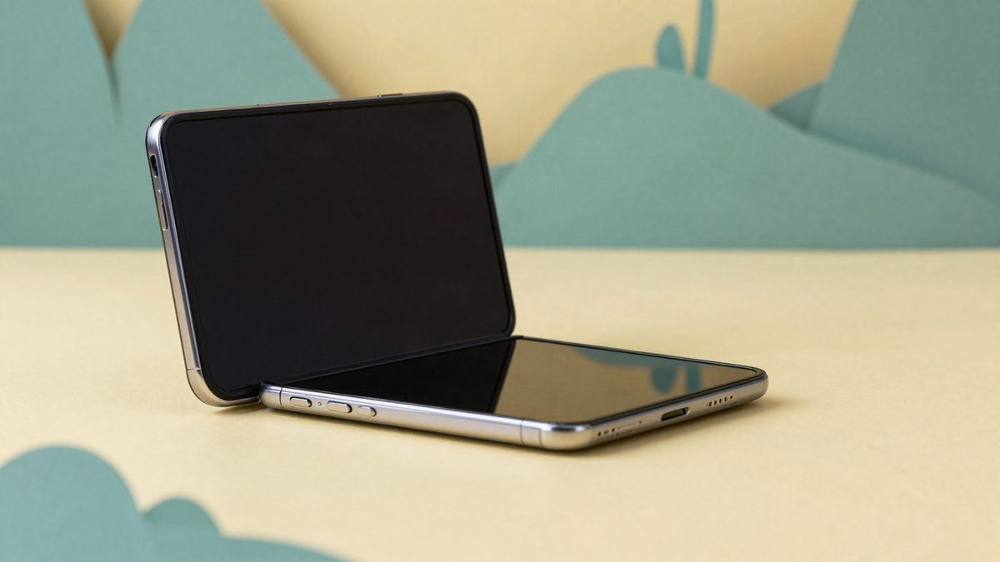

iPhone Duo dobio otključavanje licem u iOS-u 27.3 Beta 2, ali ga je blogger prevario fotografijom

Apple je u iOS 27.3 Beta 2 za iPhone Duo dodao otključavanje licem preko kamere vanjskog zaslona, iako telefon nema senzor dubine kao Face ID. Blogger je u video testu navodno otključao telefon običnom fotografijom, a Apple je funkciju ograničio: ne radi za Apple Pay ni za automatsko popunjavanje lozinki.
Apple je ovaj tjedan razvojnim programerima poslao iOS 27.3 Beta 2 za iPhone Duo. Firmware donosi otključavanje licem preko kamere vanjskog zaslona. iPhone Duo nema TrueDepth hardware koji koristi Face ID, pa se prepoznavanje oslanja na običnu prednju kameru. Tako će se manje trebati posezati za senzorom otiska prsta na boku uređaja.
Sigurnost je međutim upitna. Blogger je objavio video test u kojem je iPhone Duo otključan samo fotografijom. Ako je test vjerodostojan, novo rješenje ima izražen problem s prepoznavanjem lažnih lica.
Zašto Face ID to ne dopušta
Face ID koristi strukturirano svjetlo. Infracrveni projektor baca na lice desetke tisuća točaka i tako gradi detaljnu trodimenzionalnu mapu, od korijena nosa i očnih duplji do donje čeljusti. Fotografija je ravna i nema podatke o dubini, pa je Face ID ne prihvaća.
iPhone Duo nema poseban senzor dubine. Sustav ima manje podataka za usporedbu, pa čak i uz neku vrstu provjere da je riječ o živoj osobi teško može doseći razinu sigurnosti Face ID-a.
Ograničenja koja je Apple postavio
Apple je funkciju ograničio. Otključavanje licem radi samo kad je telefon sklopljen i koristi se vanjski zaslon. Ne može se koristiti za plaćanje preko Apple Paya niti za automatsko popunjavanje lozinki. Ako telefon nije otključan više od 45 minuta, ponovno treba unijeti lozinku ili koristiti otisak prsta.
Softverom se tako pokušava nadoknaditi nedostatak hardwarea. Otključavanje licem je praktičnije, ali je daleko od razine Face ID-a. Funkcija je zasad dostupna samo u beta verziji za programere.
Izvor: cnBeta